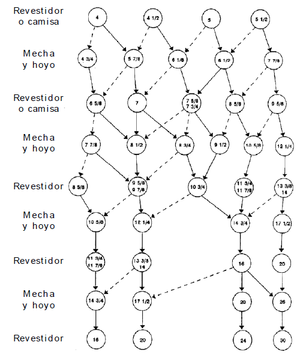

SELECCIÓN DE DIÁMETRO Y TIPO DE CONEXIÓN DE LOS REVESTIDORES
DIÁMETROS
Una vez escogidas y ajustadas las profundidades de asentamiento de cada una de las sartas de revestimiento, se procede a seleccionar los diámetros de los mismos.
En base a la figura abajo mostrada, seleccione inicialmente de la fila superior el diámetro del revestidor de producción y luego en la siguiente fila el diámetro del hoyo donde se correrá dicho revestidor. Repita el proceso fase a fase mientras continúa la secuencia hacia abajo a través del gráfico.

CONEXIONES
Diámetro externo del revestidor (pulg.):
4"
4 1/2"
5"
5 1/2"
Diámetro del hoyo (pulg.):
4 3/4"
5 7/8"
6 1/8"
6 1/2"
7 7/8"
Indique el tipo de sarta de revestimiento:
Revestidor.
Camisa.
Conexión recomendada:
Selecione la conexión de cada revestidor en base al árbol de decisión abajo mostrado.